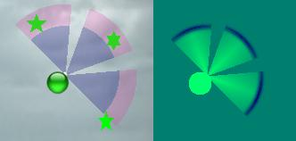

Computer Science & Engineering →Mobile Robotics →List Of Experiments
Sensor Modelling
Consider a robot at a point with an obstacle at a distance of 5mts from robot along its path of sensing. Now let us take the reading of the sensor sensing the obstacle. It gives us a value lesser or greater than the actual 5mts. This error in measurement is denoted as noise and there are various modalities to model this error. In robotics probability theory has become a popular standpoint of modelling sensor noise or noisy measurements of the sensor.
In the above example, if we take multiple measurements on the same obstacle and tabulate these measurements we would observe a trend that suggests most of the measurements cluttered around 0.2m, with say around 70% of the measurements lying between 4.8 and 5.2m. To model the noise in such an instance through a Gaussian distribution is indeed tempting and reasonable. Hence the Gaussian function that we would apply to this particular sensor would have 0.2mts as its variance. i.e. When the same sensor is used to take reading of an obstacle that is not known to us, and if the reading of the sensor is 7mts then we model the measurement as a Gaussian whose mean is 7 and variance of 0.2. This would avoid an overconfident decision that the obstacle is precisely at 7m in front of the obstacle. Rather it suggests that the most probable location of the obstacle is 7m away from the robot and that the probability tapers away as we move away from 7m on either side. In other words the probability that the obstacle is 7m is more likely than the probability that it is at 6.5m or 7.5m.
Note that this modelling varies from sensor to sensor and depends on various factors. For example the pdf of the sonar sensors vary radially and also angularly, where as the laser range finders are linear along line of sensing.
Now let us discuss in detail about sensor models used in this Virtual Lab for Sonar and Laser/IR.
Consider a grid area of 500x500 pixels. Now the probability of occupancy in a cell/pixel denotes the likelihood of that cell/pixel being occupied by an obstacle, which in essence models the noise of the sensor measurement through a discretization of its noise pdf. Let us consider the below map with obstacle in white colour (Environmental view) and grid map (View perceived by robot) with all pixels initialized to 0.5 as probability of finding an obstacle in an unknown area is half.

Note: Figures below are of two kinds 1. Environmental view. 2. View perceived by robot (Green background).
Sonar Sensor: Single sonar:
Sonar sensor unlike laser covers a cone area as given in the fig below.

When the sensor starts scanning, each cell/pixel contained in this conical area is set to probability of occupancy accordingly as per sonar sensor characteristics. The cells/pixels near the robot are set to low values of Occupancy probability and when the radial distance increases, the probability value increases. The below figure will give an idea of how the probability value is described in the conical area from the region close to the robot to the region far away from the robot, when no obstacle is sensed. Note that the variance in the probability is dependent on the angular factor as well.
When there is an obstacle in the conical area, then
a. Minimum radial distance (Ra) at which the obstacle is encountered is given by the sonar sensor.
b. The occupancy probability of each pixel/cell is updated in the following way after the obstacle is encountered. If the obstacle is found at a point as shown in the figure below, then blue area of the cone is where the probability of occupancy of pixels/cells are high and green area of the cone is where the probability of occupancy of pixels/cells are low. Further below we explain on how this computation is performed.
c. In figure below, for the area shown in blue, 2D Gaussian is computed whose mean is at the center of the Arc b, whose probability values progressively decreases as we move along the circumference of the Arc b away from its center as well as radically on either side towards Arcs a and c. Note that the radial distance between Arc a and Arc b, defines the variance of the probability along radial direction, σr.

The probability is computed discretely for all cells within the cone, essentially at the centre of each cell. In the Virtual Lab simulation applet the resolution of a cell is taken as one pixel and hence the probabilities are computed at each pixel.
Equation:
- Probability of Occupancy of a pixel/cell in cone is given by the below equation with mean at the center of Arc b.
- Note:a. r is the distance of the point from Arc b as shown in the above figure.
- b. σ is the radial variance of the Gaussian function
- c. θ is the angle theta as shown in the above figure
- d. σth is the angular variance of the Gaussian function
- 2. Probability of Non occupancy of a pixel/cell in cone is given by the Sigmoidal function as below and denoted in red color in the below figure.
- From the Robot to the Arc c, the resultant probability of occupancy of pixels is calculated by normalising Probability of Occupancy by Gaussian with the Probability of Non Occupancy by Sigmoid Function.
- When there is no obstacle along the path of the single ray then the probability of occupancy of the cells/pixels along the path is set to 0 from its pervious value 0.5.
- When there is an obstacle the sensor would be able to give the distance at which the obstacle is found. Sensor modelling is done with the help of Gaussian function that calculates the probability for a distance lesser and greater than the measured distance. Cells/Pixels along the path are updated accordingly as shown is the below figure.
- Note that using a single ray we can compute the occupancy probability of the cells/pixels from the robot till the obstacle (measured distance) as well as to a distance equal to variance of gaussian function farther away from obstacle. The pdf of this would be derived with the below equation along with the graph.
- Probability of Occupancy of a point in the sensor ray where there is no obstacle is Zero.
- Probability of Occupancy of a point in the sensor ray when there is an obstacle is given by:

Note: In mapping algorithms the new probability value is calculated by multiplying the old value with that of the current probability value. For example if the probability value of a cell/pixel 300,100 is 0.2 in the first scan and when the same point is being scanned from another position of the robot which gives 0.3, then the new value of occupancy probability at 300,100 is 0.06. This is one of the reasons for having less values of probability than rounding them to zeroes so as to avoid multiplication with zeroes. The mapping algorithm will be discussed in a subsequent VL.
Sonar Array:
Here the sonar array is considered as 3 single sonar sensors as shown in the figure. Probability of occupancy is calculated with same procedure as in the single sonar. Below are the figures that give you the environment of the robot (left) and its sensor model (right) with probability of occupancy represented with variance in colours (shades of green). This holds good till all 3 sensors are not overlapping. Overlapping scenario would be discussed in mapping algorithm of the subsequent VL.

Laser/IR:
Single ray laser: For a given an orientation, the sensor is capable of sensing the path along its orientation and gives the measurements. Laser ray covers a linear group of cells/pixels as shown in the below figure.

Equation:


Laser Array: Laser array is nothing but set of readings taken by the single ray laser for theta varying from 0 to 180. The same procedure as in singleray laser is followed here. Below are the figures that gives you the environment of the robot and its perception.

IR sensor has been modelled similar to that of laser with less range and angle of array limited to 30 degrees.